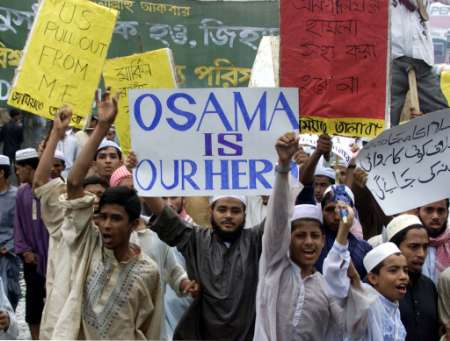
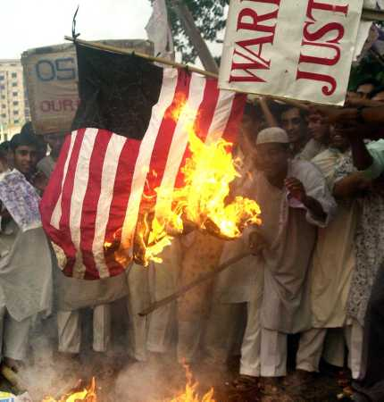

|
|
Religious Extremism and Nationalism in
Bangladesh
Part Two
By Bertil Lintner
It is impossible to determine how much support the
Jamaat actually had in the 2001 election as it was part of an alliance whose
various members voted for each other against the Awami League, but its 17
seats in the new parliament - and two ministers in the government - suggest a
dramatic increase. Its youth organization, Islami Chhatra Shibir (ICS), is
especially active. It is a member of the International Islamic Federation of
Student Organizations as well as the World Assembly of Muslim Youth and has
close contacts with other radical Muslim groups in Pakistan, the Middle East,
Malaysia and Indonesia. One of its main strongholds is at the university
in Chittagong, and it dominates the Deobandi madrassas all over the country,
from where it draws most of its new members. It has been implicated in a
number of bombings and politically and religiously motivated assassinations.
On April 7, 2001, two leaders of the Awami League's youth and student front
were killed by ICS activists and on June 15, an estimated 21 people were
killed and over 100 injured in a bomb blast at the Awami League party office
in the town of Narayanganj. Two weeks later, the police arrested an ICS
activist for his alleged involvement in the blast. (18) A youngish
Islamic militant, Nurul Islam Bulbul, is the ICS's current president, and
Muhammad Nazrul Islam its general secretary.
For many years the mother party, the Jamaat, was led by Gholam Azam, who had
returned from Pakistan when Zia was still alive and in power. He resigned in
December 2000, and Motiur Rahman Nizami took over as the new amir of the party
amid wide protests and demands that he be put on trial for war crimes he
committed during the liberation war as the head of a notorious paramilitary
force, the Al-Badar. In one particular incident on December 3, 1971, some
members of that force seized the village of Bishalikkha at night in search of
freedom fighters, beating many and killing eight people. When Nizami's
appointment was made public, veterans of the liberation war burnt an effigy of
him during a public rally. (19) In October 2001, Nizami was appointed minister
for agriculture, an important post in a mainly agricultural country such as
Bangladesh. His deputy, Ali Ahsan Muhammad Mujahid, became minister for social
welfare.
The terrorist attacks in New York on September 11, 2001, occurred during the
election campaign in Bangladesh, when the country was ruled by a caretaker
government. But the outgoing prime minister, the Awami League's Sheikh Hasina,
and then opposition leader Khaleda Zia of the BNP, condemned the attacks and
both, if they were elected, offered the United States use of Bangladesh's air
space, ports and other facilities to launch military attacks against the
Taliban and Al-Qaeda in Afghanistan. Many Bangladeshis were moved by the loss
of as many as 50 of their countrymen in the attacks on the World Trade Center.
While some of them were immigrants working as computer analysts and engineers,
most seem to have been waiters at the Window on the World restaurant who were
working hard to send money back to poor relatives in Bangladesh. A
Bangladeshi embassy official in Washington branded the attacks "an
affront to Islam , an attack on humanity." (20)
Jamaat's stand on the "war against terrorism," however, contrasts
sharply to that of the more established parties. Shortly after the US attacks
on Afghanistan began in October 2001, the Jamaat created a fund purportedly
for "helping the innocent victims of America's war." According to
the Jamaat's own announcements, 12 million Bangladeshi taka ($210,000) was
raised before the effort was discontinued in March 2002. Any remaining funds,
the Jamaat then said, would go to Afghan refugees in camps in Pakistan. (21)
2. The Rise of the
Harkat-ul-Jihad-al-Islami (HUJI) and other Extremist Groups
The growth of the Jamaat during the Ershad regime paved the
way for the establishment of even more radical groups when the BNP returned to
power in 1991. According to Bangladeshi journalists, in the early 1990s
Bangladeshi diplomats in Saudi-Arabia issued passports to Pakistani militants
in the kingdom to enable them to escape to Bangladesh. (22) Other extremists
from Pakistan - and perhaps also Afghanistan - appear to have been able to
enter Bangladesh in the same way during that period.
These men were instrumental in building up HUJI, which was first formed in
1992, reportedly with funds from Osama bin Laden. (23) The existence of firm
links between the new Bangladeshi militants and Al-Qaeda was proven when
Fazlul Rahman, leader of the "Jihad Movement in Bangladesh" (to
which HUJI belongs), signed the official declaration of "holy war"
against the United States on February 23, 1998. Other signatories included bin
Laden, Ayman al-Zawahiri (leader of the Jihad Group in Egypt), Rifa'i Ahmad
Taha aka Abu-Yasir (Egyptian Islamic Group), and Sheikh Mir Hamzah (secretary
of the Jamiat-ul-Ulema-e-Pakistan). (24)

HUJI is headed by Shawkat Osman aka Maulana or Sheikh Farid in Chittagong and,
according to the US State Department, has "at least six camps" in
Bangladesh. (25) Like the ICS it draws most of its members from the country's
Deobandi madrassas, and, also like the ICS, the group has shown that it is
capable of extreme violence. Bangladesh's Islamic radicals first came to
international attention in 1993, when author Taslima Nasrin was forced to flee
the country after receiving death threats. The fundamentalists objected to her
critical writings about what she termed outdated religious beliefs. Extremist
groups offered a $5,000 reward for her death. She now lives in exile in
France.
While Nasrin's outspoken, feminist writings caused controversy even among
moderate Bangladeshi Muslims, the entire state was shocked when, in early
1999, three men attempted to kill Shams ur-Rahman, a well-known poet and a
symbol of Bangladesh's secular nationhood. During the ensuing arrests, the
police said they seized a list of several intellectuals and writers, including
Nasrin, whom Bangladeshi religious extremists branded "enemies of
Islam." (26)
Bangladeshi human rights organizations openly accuse HUJI of being behind both
the death threats against Nasrin and the attempt to kill Rahman. The US State
Department notes that HUJI has been accused of stabbing a senior Bangladeshi
journalist in November 2000 for making a documentary on the plight of Hindus
in Bangladesh, and the July 2000 assassination attempt of then prime minister
Sheikh Hasina. (27)

As with the Jamaat and the ICS, HUJI's main stronghold is in the lawless
southeast, which includes the border with Burma. With its fluid population and
weak law enforcement, the region has long been a haven for smugglers, gun
runners, pirates, and ethnic insurgents from across the Burmese border. The
past decade has seen a massive influx of weapons, especially small arms,
through the fishing port of Cox's Bazar, which has made the situation in the
southeast even more dangerous and volatile. (28)
Typically, the winner in the 2001 election in one of the constituencies in
Cox's Bazaar, BNP candidate Shahjahan Chowdhury, was said to be supported by
"the man allegedly leading smuggling operations in [the border town of]
Teknaf." Instead of the regular army, the paramilitary Bangladesh Rifles
was deployed in this constituency to help the police in their electoral
peacekeeping. This was, according to the NGO SEHD, "criticised by the
local people who alleged that the Bangladesh Rifles were well connected with
the smuggling activities and thus could take partisan roles." (29)
In one of the most recent high-profile attacks in the area, Gopal Krishna
Muhuri, the 60-year-old principal of Nazirhat College in Chittagong and a
leading secular humanist, was gunned down in November 2001 in his home by four
hired assassins, who belonged to a gang patronized by the Jamaat. (30) India,
which is viewing the growth of Bangladesh's Islamic movements with deep
concern, has linked HUJI militants to the attack on the American Center in
Kolkata (Calcutta) in January 2002, and a series of bomb blasts in the state
of Assam in mid-1999. (31)
On May 10-11, 2002, nine Islamic fundamentalist groups, including HUJI, met at
a camp near the small town of Ukhia south of Cox's Bazaar and formed the
Bangladesh Islamic Manch (Association). The new umbrella organization also
includes one purporting to represent the Rohingyas, a Muslim minority in
Burma, and the Muslim Liberation Tigers of Assam, a small group operating in
India's northeast. By June, Bangladeshi veterans of the anti-Soviet war in
Afghanistan in the 1980s were reported to be training members of the new
alliance in at least two camps in southern Bangladesh. (32)
3. The Plight of the Rohingyas
The Arakan area of Burma was separated from the rest of the
country by a densely forested mountain range, which made it possible for the
Arakanese - most of whom are Buddhist - to maintain their independence until
the late 18th century. Contacts with the outside world had until then been
mostly to the west, which, in turn, had brought Islam to the region. The first
Muslims on the Arakan coast were Moorish, Arab and Persian traders who arrived
between the 9th and the 15th centuries. Some of them stayed and married local
women. Their offspring became the forefathers of yet another hybrid race,
which much later was to become known as the Rohingyas. Like the people in the
Chittagong area, they speak a Bengali dialect interspersed with words borrowed
from Persian, Urdu and Arakanese. (33)
There is no evidence of friction between them and their Buddhist neighbors in
the earlier days. Indeed, after 1430 the Arakanese kings, though Buddhists,
even used Muslim titles in addition to their own names and issued medallions
bearing the kalima, or Muslim confession of faith. (34) Persian was the court
language until the Burmese invasion in 1784. Burmese rule lasted until the
first Anglo-Burmese war of 1824-26, when Arakan was taken over by the British
along with the Tenasserim region of southeastern Burma.
When Burma was a part of British India, the rich ricelands of Arakan attracted
thousands of seasonal laborers, especially from the Chittagong area of
adjacent East Bengal. Many of them found it convenient to stay since there was
already a large Muslim population who spoke the same language, and, at that
time, no ill feeling towards immigrants from India proper - unlike the
situation in other parts of Burma, where people of subcontinental origin were
despised. At the same time, Buddhist Arakanese migrated to East Bengal and
settled along the coast between Chittagong and Cox's Bazaar. The official
border, the Naf River, united rather than separated the two British
territories.
But the presence of a Muslim minority in Arakan became an issue after Burma's
independence in 1948. The Buddhist and Muslim communities had become divided
during World War Two; the Buddhists had rallied behind the Japanese while the
Muslims had remained loyal to the British. Some Muslims, fearing reprisals
from the Buddhists once the British were gone, rose up in arms, demanding an
independent state, and the Burmese army was sent in to quell the rebellion.
Predominantly Buddhist Burma never really recognized the Arakanese Muslims -
who in the 1960s began to refer to themselves as "Rohingya," a term
of disputed origin - as one of the country's "indigenous" ethnic
groups. As such, and because of their different religion and physical
appearance, they have often become convenient scapegoats for Burma's military
government to rally the public against whenever that country has been hit by
an economic or political crisis.
In March 1978, the Burmese government launched a campaign code-named Naga Min
(Dragon King) in Arakan, ostensibly to "check illegal immigrants."
Hundreds of heavily armed troops raided Muslim neighborhoods in Sittwe (Akyab)
and some 5,000 people were arrested. As the operation was extended to other
parts of Arakan, tens of thousands of Rohingyas crossed the border to
Bangladesh. By the end of June, an approximately 200,000 Rohingyas had fled,
causing an international outcry. (35) Eventually, most of the refugees were
allowed to return, but thousands found it safer to remain on the Bangladesh
side of the border. Entire communities of "illegal immigrants" from
Burma sprung up along the border south of Cox's Bazaar, and a steady trickle
of refugees from Burma continued to cross into Bangladesh throughout the
1980s.
The immensely wealthy Saudi-Arabian charity Rabitat al Alam al Islami began
sending aid to the Rohingya refugees during the 1978 crisis, and it also built
a hospital and a madrassa at Ukhia south of Cox's Bazaar. Prior to these
events, there was only one political organization among the Rohingyas on the
Bangladesh-Burma border, the Rohingya Patriotic Front (RPF), which was set up
in 1974 by Muhammad Jafar Habib, a native of Buthidaung in Arakan and a
graduate of Rangoon University. He made several appeals - most of them
unsuccessful - to the international Islamic community for help, and maintained
a camp for his small guerrilla army, which operated from the Bangladeshi side
of the border.
In the early 1980s, more radical elements among the Rohingyas broke away from
the RPF to set up the Rohingya Solidarity Organization (RSO). Led by a medical
doctor from Arakan, Muhammad Yunus, it soon became the main and most militant
faction among the Rohingyas in Bangladesh and on the border. Given its more
rigid religious stand, the RSO soon enjoyed support from like-minded groups in
the Muslim world. These included Jamaat-e-Islami in Bangladesh and Pakistan,
Gulbuddin Hekmatyar's Hizb-e-Islami in Afghanistan, Hizbe-ul Mujahideen in
Kashmir and Angkatan Belia Islam sa-Malaysia (ABIM), the Islamic Youth
Organization of Malaysia. Afghan instructors were seen in some of the RSO
camps along the Bangladesh-Burma border, while nearly 100 RSO rebels were
reported to be undergoing training in the Afghan province of Khost with
Hizb-e-Islami Mujahideen. (36)
Citations:
18 "Bangladesh Assessment 2002", Southasia
Terrorism Portal, an Indian website, 2001. www.satp.org
19 Bangladesh Broadcasting Service, December 8, 2000.
20 http://usinfo.state.gov/topical/pol/terror/01100321.htm
21 Holiday (Bangladesh), March 8, 2002.
22 Communication with a Bangladeshi journalist who has requested anonymity,
April 2002.
23 Southasia Terrorism Portal.
24 See ERRI Daily Intelligence report, ERRI Risk Assessment Service, June 11,
1998, Vol,. 4 - 162. The full text of the 1998 fatwah is also available on http://www.ict.org.il/articles/fatwah.htm
and
http://www.fas.org/irp/world/para/docs/980223-fatwa.htm
25 Patterns of Global Terrorism 2001.
26 Türkkaya Ataöv, Kashmir and Neighbours: Tale, Terror, Truce, Aldershot
(UK): Ashgate Publishing, 2001, p. 150.
27 Patterns of Global Terrorism, 2001.
28 Small Arms Survey 2001: Profiling the Problem, Oxford: Oxford University
Press (and Small Arms Survey, Geneva), 2001, p. 181.
29 The Eighth Parliamentary Elections 2001, p. 99.
30 Amnesty International, December 2001.
31 The Hindu, January 23, 2002. See also Subir Bhaumik, The Second Front of
Islamic Terror in South Asia, paper presented at an international seminar on
terrorism and low intensity conflict, Jadavpur University, Kolkata, March 6-8,
2002.
32 Far Eastern Economic Review, July 11, 2002.
33 For a comprehensive account of the Rohingyas and other Muslim communities
in Burma, see Moshe Yegar, The Muslims of Burma: A Study of a Minority Group,
Wiesbaden: Otto Harrassowitz, 1972.
34 Ibid., p. 19.
35 For an account of the 1978 refugee crisis, see Bertil Lintner, Burma in
Revolt: Opium and Insurgency Since 1948, Chiang Mai: Silkworm Books, 1999, pp.
317-8.
36 Bertil Lintner, "Tension Mounts in Arakan State," Jane's Defence
Weekly, October 19, 1991. The story was based on interview with Rohingyas and
others in the Cox's Bazaar area in 1991. I also visited a Rohingya army camp
near the border with Burma.
---------------------
Mr. Lintner writes for Far Eastern Economic Review, a Hong Kong based
publication of The Wall Street Journal. This paper was presented in an
international workshop on Religion and Security in South Asia at the Asia
Pacific Center for Security Studies in Honolulu, Hawaii. August 19-22, 2002.
Move
to part-3
|
|
|